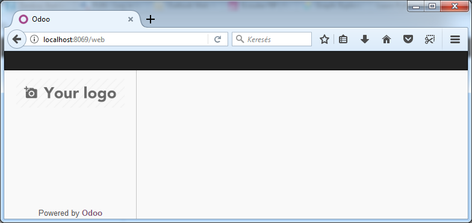

<section class="oe_container">
    <div class="oe_row oe_spaced">
        <h2 class="oe_slogan" style="color:#028484;">Fix error blank page in Odoo 10.0</h2>
        <div class="oe_demo oe_picture  oe_screenshot">
            
        </div>
</section>

<section class="oe_container" style="background-color:#E8E8E8; padding:20px 0px 90px 0px">
    <div class="oe_row">
        <div class="oe_span12">
            <div class="oe_centeralign">
                <p>On MS Windows, the mimetypes module relies on the Windows Registry to guess mimetypes. </p>
                <p>As a consequence, when generating assets bundle for javascript files, the mime type of js files may be wrong.</p>
            </div>
        </div>	
    </div>
</section>

<section class="oe_container oe_separator">
</section>

<section class="oe_container oe_dark">
    <div class="oe_row">
        <div class="oe_span12 oe_centeralign">
            <br/>
            <h3>Help & Support</h3>
            <br/>
                Website: <a href="https://homnaycodegi.com" target="_blank">HomNayCodeGi.Com</a><br/>
                Contact: <a href="mailto:minh.hquang09@gmail.com" subject="Fix Error Blank Page Odoo 10.0">Email Support</a><br/>
            <br/>
        </div>
    </div>
</section>